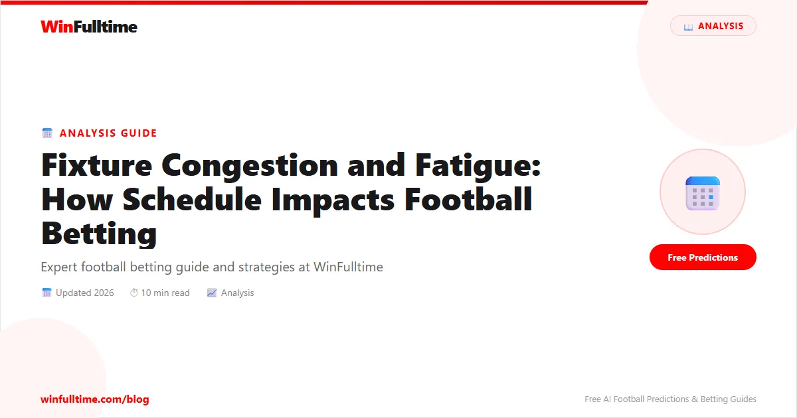

Fixture Congestion and Fatigue: How Schedule Impacts Football Betting

Imagine a team that played 120 minutes on Thursday, flew across Europe, and is now expected to perform at full intensity on Sunday. This is fixture congestion — and it is one of the most reliable factors that bookmakers fail to fully price in. A fatigued team is slower, more prone to errors, and significantly less effective in the final third. Understanding when fatigue matters can give you a consistent edge — particularly in in-play markets and total goals betting.
What Is Fixture Congestion?
Fixture congestion occurs when a team plays multiple matches in quick succession — typically 3+ matches within 10 days. This compresses recovery time and forces managers into rotation decisions. European midweeks, cup competitions, and international travel all create congestion.
How Fatigue Affects Performance
Research from sports science journals shows measurable performance decline after 48 hours of inadequate recovery:
- Sprint speed drops by 5–8% after 3 matches in 7 days
- Passing accuracy declines by 10–15% in fatigued players
- Goal conversion drops by 20–30% for tired forwards
- Defensive errors increase — leading to more goals for opponents
Fatigue Betting Scenarios
1. Thursday–Sunday Turnaround
Europa League or Champions League teams playing Thursday night often face a Sunday match with only 72 hours recovery. The impact is biggest for the first 30 minutes — players are sluggish, reactions are slower.
Betting implication: Back Under 2.5 in the first half, or consider Draw No Bet on the fresher opponent.
2. Midweek Cup + Weekend League
When a team plays a cup match (FA Cup, League Cup) midweek and then a league match on Saturday, rotation is forced. Key players may be rested. Check the lineup — if the best XI isn't starting, adjust your prediction accordingly.
3. International Travel
Teams travelling across multiple time zones (e.g., South American clubs in Champions League, Asian teams at World Cup) suffer additional fatigue. BBC Sport covers these travel impacts in detail for major club competitions.
4. End of Season Accumulation
Teams playing 3 matches a week for 6+ weeks (common in season run-ins) show cumulative fatigue. Draw and Under 2.5 bets become more valuable as exhausted teams cancel each other out.
How to Check Fixture Congestion
- Open Flashscore — check both teams' last 10–14 days of fixtures
- Count matches played in the past week
- Check if they're midweek + weekend this week
- Check European competition involvement — Thursday night = recovery concern
- Look at squad depth — a rotation-heavy team (like Man City) handles congestion better than a thin-squad team
Pro Tip: Squad Depth Is the Key Variable
Not all congested teams are equally affected. Manchester City, Real Madrid, Bayern Munich have 22+ quality players and rotate seamlessly. Burnley, Luton Town, smaller clubs cannot rotate without significant quality drop. A congested thin-squad team is a much better betting target than a congested superclub. FBref squad data helps assess depth.
Fatigue Impact by Competition
| Scenario | Fatigue Level | Best Markets |
|---|---|---|
| Thursday–Sunday (Europa/Champions) | High | Under 2.5, First 30 mins Under 1.5 |
| Midweek Cup + Weekend League | Moderate | DNB on fresher team, Over Cards |
| 3 matches in 7 days (league only) | Moderate–High | Under 2.5, Draw No Bet |
| International travel + match | Very High | Under 2.5, Away team Under 1.5 goals |
| Season run-in (3 matches/week for weeks) | Cumulative High | Draw, Under 2.5 |
The Bottom Line
Fixture congestion is a consistently available edge — most bettors check form but ignore schedule. Before betting, spend 2 minutes checking both teams' match schedules over the past 7–14 days. Teams with 3+ matches in 10 days are fatigued targets for Under 2.5, Draw, and In-Play opportunities.
Check the Schedule Before Betting
Use WinFulltime predictions alongside schedule analysis for more complete decisions.
View Predictions →